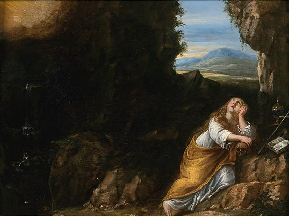

Marie-Madeleine — De la Légende à l’Histoire
Marie-Madeleine est sans doute l’une des figures les plus connues et les plus mystérieuses des débuts du christianisme.
Présente dans les Évangiles, elle apparaît notamment comme l’une des femmes ayant accompagné Jésus et comme un témoin majeur de sa Passion et de sa résurrection.
Mais au fil des siècles, son personnage s’est enrichi de traditions, de récits et de légendes qui ont progressivement dépassé les quelques éléments que les textes anciens permettent réellement d’établir.
De la femme mentionnée dans les Évangiles à la figure de la pécheresse repentie, puis aux traditions qui la font venir en Gaule et terminer sa vie en Provence, son histoire s’est ainsi transformée au gré des époques.
Où s’arrête l’histoire ? Où commence la légende ?
C’est cette frontière, parfois difficile à définir, que nous vous proposons d’explorer.
